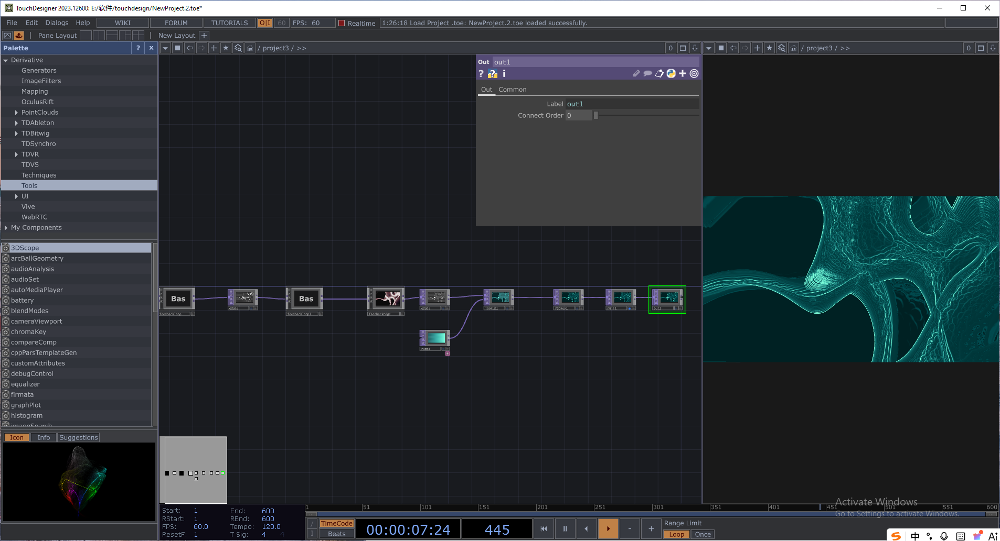

Concept : Lighting, Shaping, and Moving
This marks my first systematic foray into TouchDesigner, focusing primarily on the practical application of basic, simple interactive visuals. Throughout this learning module, I gained a firsthand appreciation for the immense allure of dynamic interface interactions. I was consistently astonished by the dramatic visual transformations that occurred—where subtle tweaks to a few parameters could yield vastly different imagery—making the interface interaction feel highly engaging and playful. It became particularly fascinating when, in the final stage, these visual animations were projected into physical space, bringing the entire experience to life in a truly captivating way.

Process : Build the game sections
In this learning exploration, I primarily experimented with three areas: image interaction, mouse interaction, and gesture interaction. By leveraging these distinct modes of expression, I explored the various possibilities for visual interaction within TD. Moreover, the application of these diverse media allowed me to gradually gain an understanding of the meaning and logic behind each node, as well as the interplay of their mutual effects—a process I found truly fascinating.
Collage: Exploration In Touch Designer
- 1.Images interaction:
- 2.Mouse interaction:
- 3. Hands interaction:
The image interaction component primarily utilizes the interconnection and interplay of various nodes—such as noise, feedback loops, and transforms—to generate imagery that undergoes random variations or movement. By adjusting parameters such as color, size, position, and spatial relationships, the final visual outcome is dynamically altered.
Mouse interaction involves augmenting images with "mousein" and "math" functions to establish a dynamic link between the mouse hardware and the visual content. By capturing mouse position data and click actions, this mechanism alters the visual effects displayed on the screen.
The hand interaction component explores the camera's capture of hand skeletal node data—specifically, reading information such as the position and rotational dynamics of the hand's skeletal nodes—and utilizes node elements (such as "math" nodes) to link this data to visual transformations. By doing so, the visual content on the screen responds dynamically to the movements and gestures of the user's hand, creating an interactive experience that bridges physical motion with digital imagery.
Final spatial showcase
Finally, I projected these visual images into a physical space using a projector, thereby achieving an integration of the physical environment and digital media. I sought out a specific multi-faceted wall structure to serve as the canvas for these small-scale visual experiments; by adjusting the size and shape of the projected imagery to align precisely with the contours of the actual wall, I was able to create a novel visual effect.